Sumô Tech Fight · InovaWeek 2026 · UVV
O caderno do nosso mini sumô: o robô de 95 × 95 mm, a eletrônica, o código que está gravado hoje e, principalmente, cada problema que apareceu no caminho e como a gente resolveu. De 11 a 23 de setembro de 2026.
Atom · o desenho que foi para a impressora
Arraste para girar, ou use as setinhas. São os STLs de verdade que foram impressos: 9.988 triângulos na base e 7.108 na tampa. O robô que ficou pronto não é bem assim — a história está logo abaixo.
Curiosidade da equipe
No papel o Atom é aquele modelo limpo aí de cima. Na bancada ele é outra coisa.
O nome do robô é Atom. O apelido, que ficou, é Frankenstein — e é pela característica, não pela cor: o monstro é verde e o Atom é azul. O que os dois têm em comum é o resto: remendo por toda parte, costura à mostra e parafuso aparecendo. E o apelido é justo.
Quando as peças saíram da impressora, vieram com defeito. Coisa da impressora, não do desenho: partes que não fecharam direito, medida que saiu torta, furo que não ficou redondo. Só que não dava para imprimir tudo de novo e esperar mais um dia. Então a gente remendou: lixou o que estava sobrando, abriu buraco novo onde o furo não serviu e prendeu tudo com parafuso por fora, aparecendo. Ficou feio e ficou firme. Cada cicatriz dessas é uma peça que a gente salvou em vez de jogar fora.
E tem os fios. Cada peça trocada pedia um remendo novo, então eles foram ficando por fora mesmo, todos passados com fita, correndo por cima do robô. De longe parece um cérebro do lado de fora — é isso que fecha o apelido.
E não foi só o plástico. Pelo caminho o robô também trocou de órgãos:
Por isso o modelo 3D desta página é o Atom bonito, o do desenho. O Frankenstein é o que entra no dojô: remendado, parafusado por fora e funcionando.
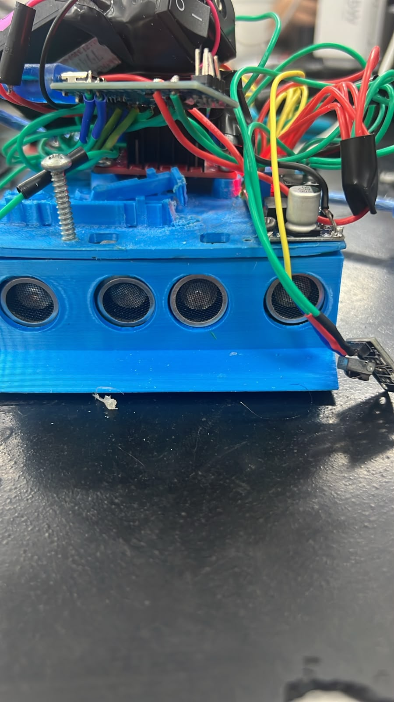
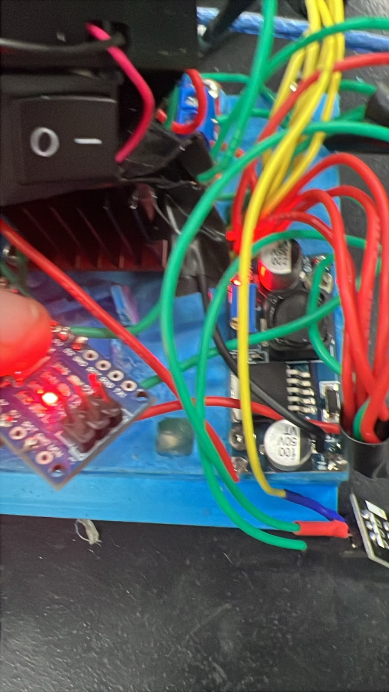
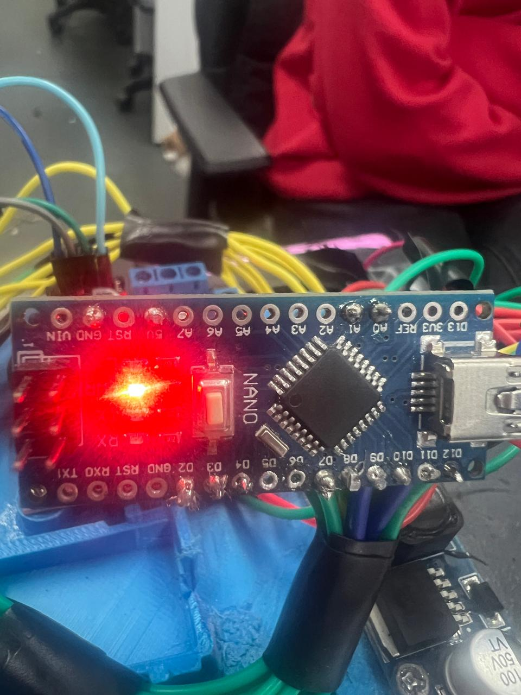
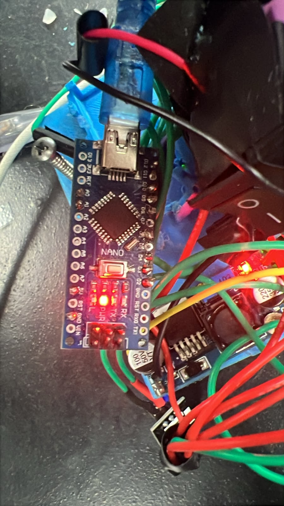
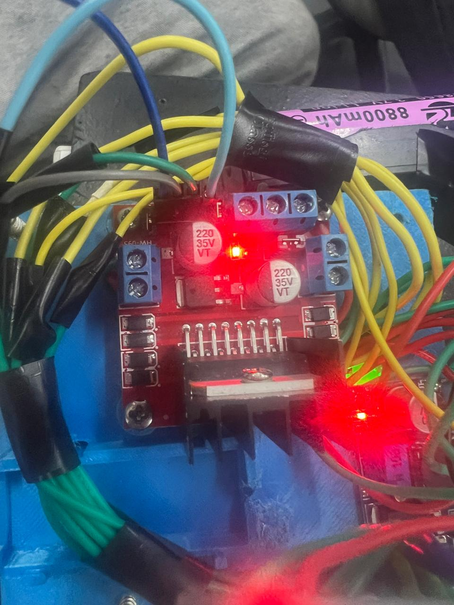
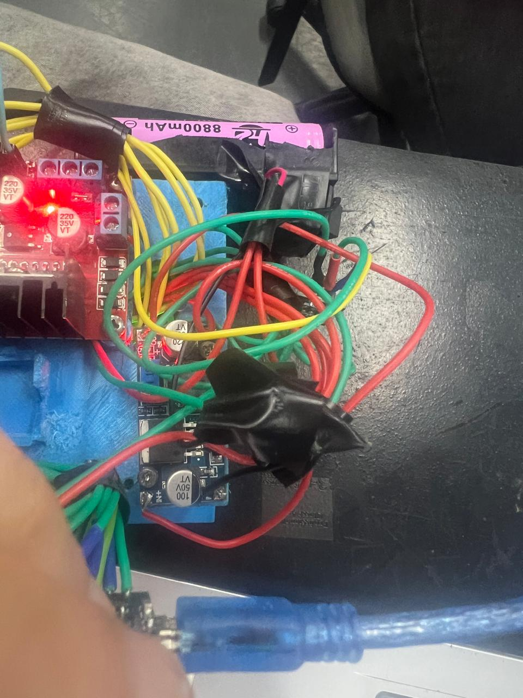
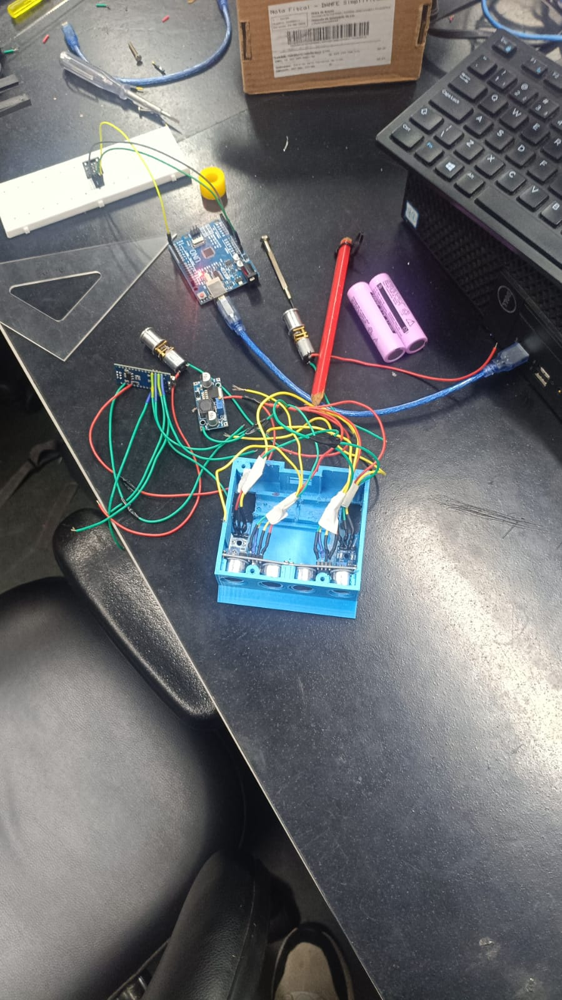
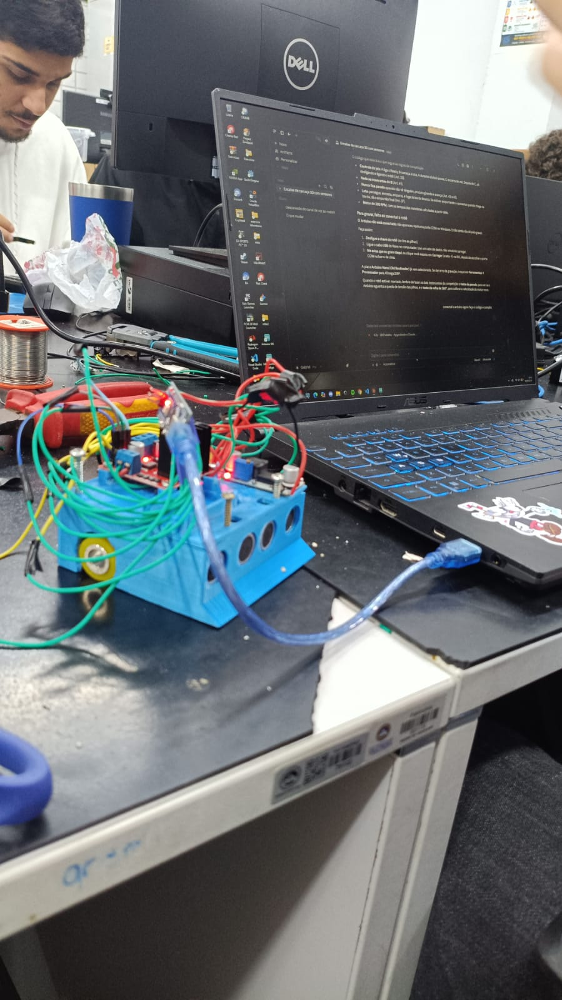
InovaWeek · UVV · Vila Velha (ES)
Projeto do 2º período de Engenharia de Software, com praticamente um mês para sair do zero até o robô lutando.
O que é o InovaWeek. É a semana de inovação da UVV, a Universidade Vila Velha, no Espírito Santo. Ao longo do período cada turma desenvolve um projeto prático e, na semana do evento, tudo é apresentado e disputado. O Sumô Tech Fight é a competição de robôs do InovaWeek: dois robôs autônomos no dojô, cada um tentando empurrar o outro para fora. Nesta edição são 70 equipes.
A equipe. Gabriel Fernandes, Gustavo Fernandes, Rafaela Ribeiro, Edvaldo Neto e Ana Lívia, do 2º período de Engenharia de Software, com a orientação do professor Abrantes, que tirou as dúvidas no laboratório.
O ritmo. Um mês — e não foi um mês tranquilo. Teve dia de entrar às 8 da manhã e sair às 23h, abrindo e fechando a faculdade. Teve semana com cinco dias seguidos nesse ritmo. A gente perdeu aula do curso para ficar no laboratório soldando, moldando o robô e tirando dúvida com o professor. O ciclo era sempre o mesmo: soldar, testar, quebrar, consertar e testar de novo.
Atas
O que aconteceu em cada dia de trabalho.
O projeto tinha duas partes que não conversavam: a carcaça de fora não tinha os furos dos HC-SR04 que a segunda parte pedia. O primeiro desenho corrigiu isso, o segundo tentou uma caixa alta com a eletrônica dentro (ficou alta demais) e o terceiro — o Atom — voltou ao corpo baixo, com 95 × 95 mm.
O PDF das regras de 2026 foi lido inteiro e transformado em checklist: tamanho, massa, receptor infravermelho obrigatório, os códigos A/B/C do controle do juiz e o fluxo Início → Ready → Start → Stop. Também saíram os mapas da base e da tampa, com o número de cada peça, para montar sem errar.
Arduino IDE 2.3.10, pacote AVR e a biblioteca IRremote 4.7.1 instalados. O código nasceu já escrito em cima das regras: nada se move antes do Start, o Stop é definitivo e o robô nunca fica parado.
A gravação só funcionou depois de descobrir que o Nano usa o bootloader novo. Aí veio o problema maior: apertar o B não fazia nada. O diagnóstico mostrou quadros infravermelhos desconhecidos e depois um zumbido de 60 Hz — sinal de pino solto.
O descobrir_pinos varreu os pinos contando bordas e disparando os
ultrassons até achar cada par TRIG/ECHO. A fiação do robô era diferente da planejada:
o receptor estava no D12, e não no D2. Todos os pinos do código foram remapeados.
O dia inteiro ajustando o comportamento na arena: ataque em linha reta com as duas rodas na mesma potência, prioridade da borda branca, prioridade para o inimigo mais perto (testada e desfeita) e, no fim, o ataque travado. Cada versão virou um backup antes da seguinte.
No mesmo dia, véspera da qualificação, o robô ganhou tração: dez borrachinhas na calota de cada roda, com o pneu por cima. Foi o que tirou a barriga do chassi do chão e fez o pneu parar de patinar.
O Atom vai para a qualificação com o backup 2 gravado, as borrachinhas nas rodas e os remendos todos no lugar.
De manhã ainda deu tempo de adaptar o código para o segundo robô, o de sucata, que tem outra fiação: ultrassons nos pinos analógicos, ponte H com ré e sem sensor de linha. A gravação dele esbarrou numa placa que não reinicia sozinha.
O resultado da quali entra aqui depois.
Impressão 3D
Três revisões até a peça fazer sentido para montar de verdade.
A primeira montagem não encaixava: a carcaça externa não tinha os furos dos HC-SR04. O primeiro desenho abriu os furos dos transdutores e um alívio lateral para a placa entrar. Só que o alívio era curto demais: a placa travava antes de os transdutores chegarem aos furos.
O segundo desenho fechou a eletrônica numa caixa alta. Funcionava no desenho, mas o robô ficou alto sem necessidade e mais fácil de ser virado. Foi descartada.
Corpo baixo de novo, alívio lateral de Y 21,4 a Y 36,1 cobrindo os 12 mm de curso da placa, pilares de Ø9 mm fora do caminho dos transdutores e os afastadores dos sensores fundidos na parede lateral e na nervura central, para poder imprimir sem suporte.
| Medida | Valor |
|---|---|
| Largura × comprimento | 95 × 95 mm |
| Base impressa | 95 × 95 × 34 mm |
| Tampa impressa | 95 × 85 × 11,3 mm |
| Corpo fechado | 45,3 mm |
| Plástico | 92,9 cm³ · até 115 g em PLA |
| Malha (base e tampa) | 1 corpo · 0 aresta não-manifold · 0 triângulo degenerado |
| Base × tampa montadas | só encostam: interseção de volume zero |
| Retirada lateral das rodas | livre |
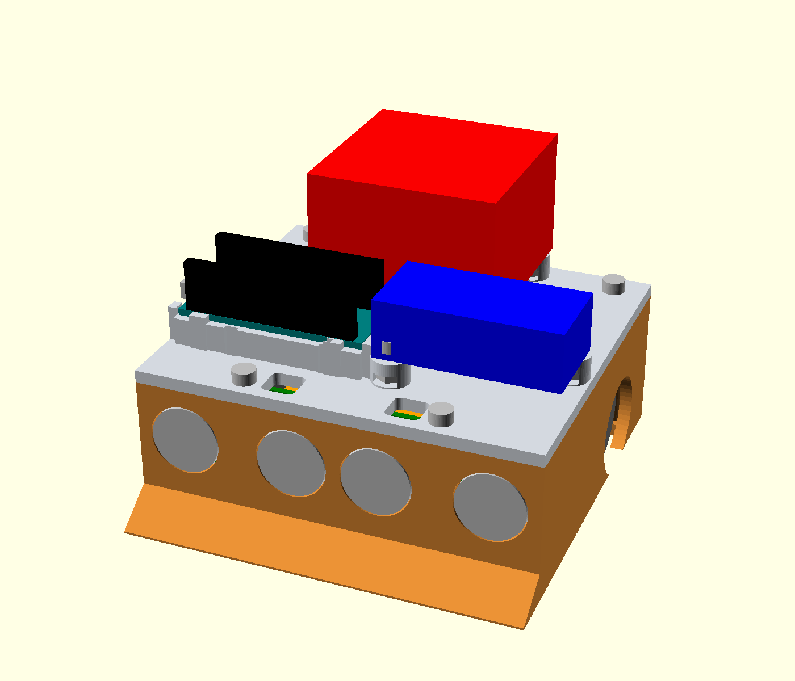
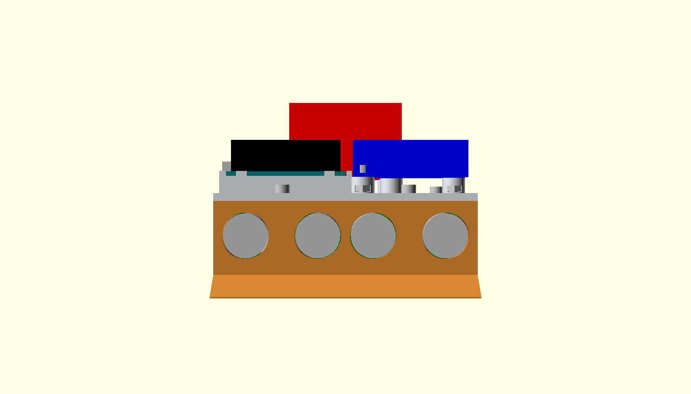
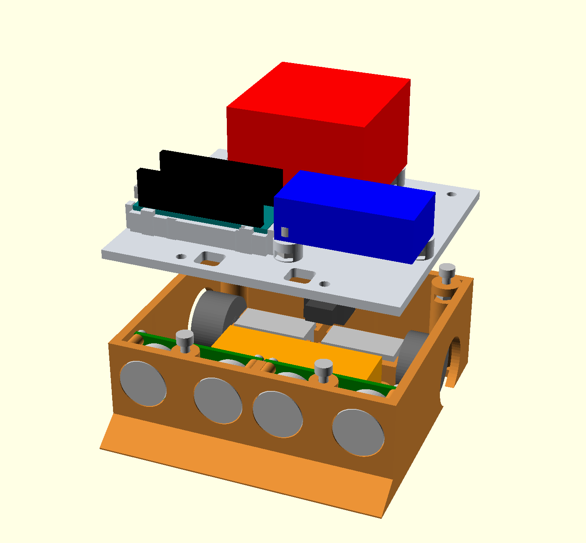
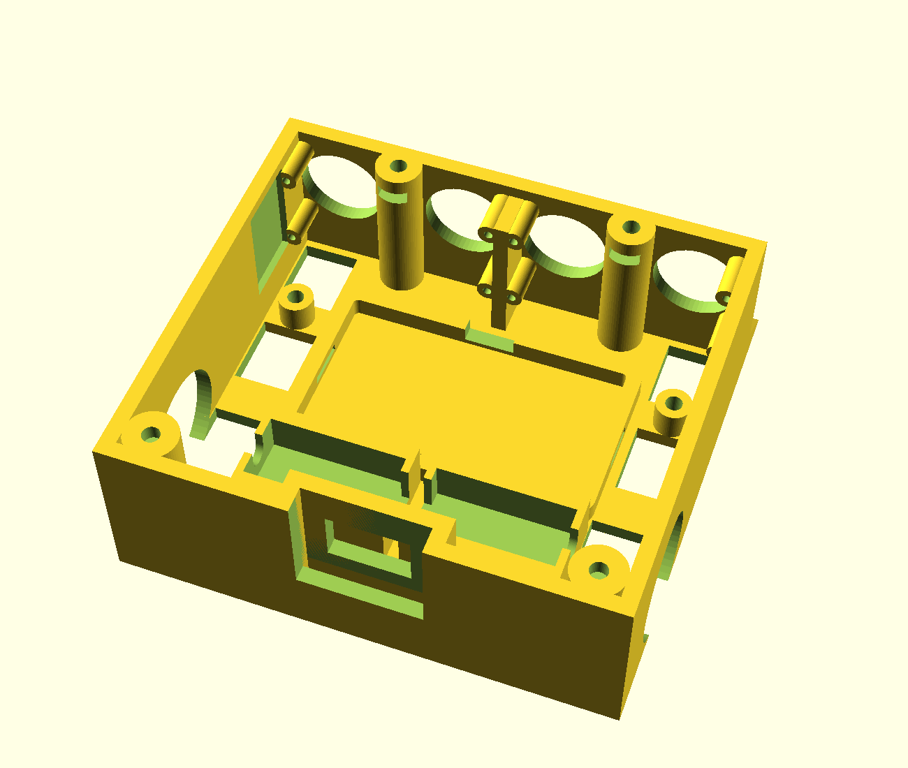
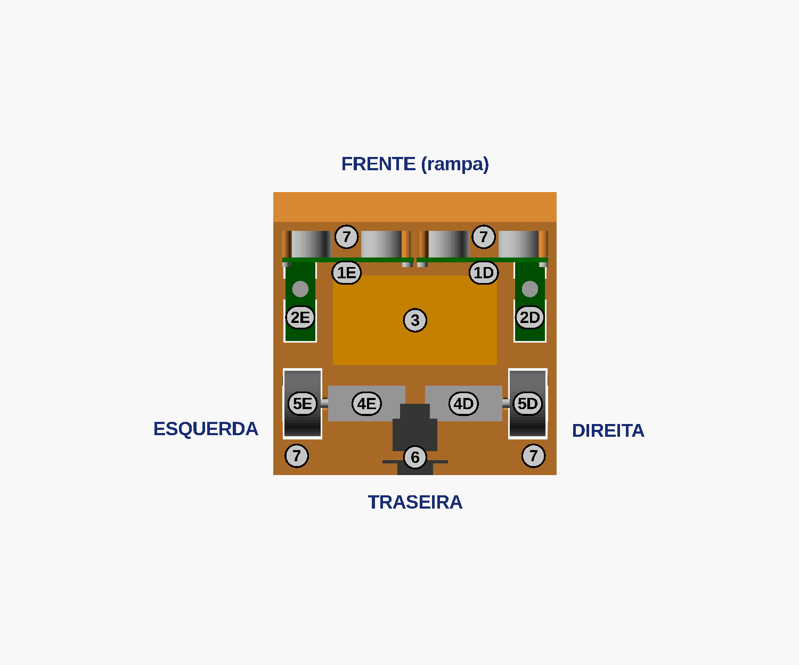
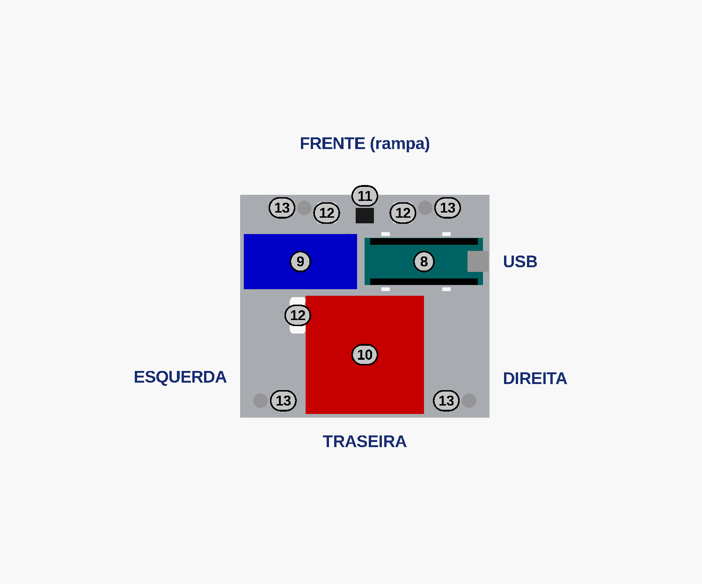
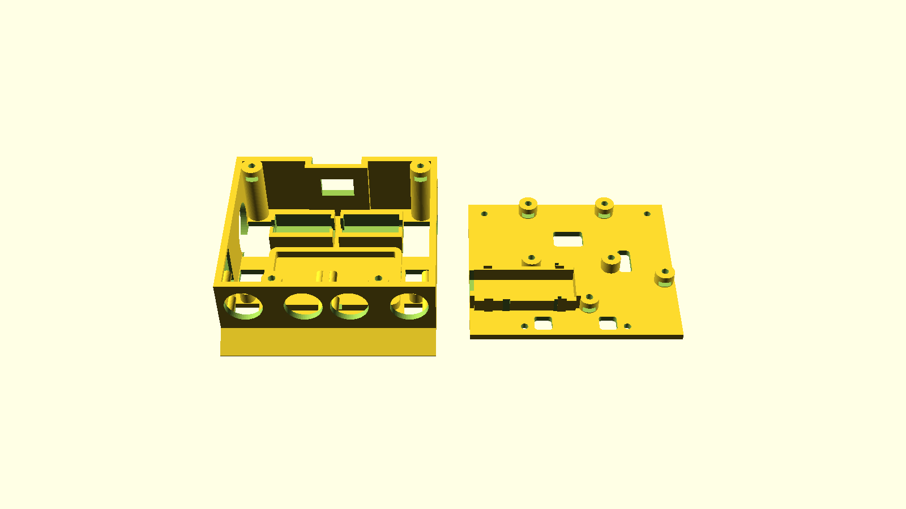
Fiação encontrada no robô
Esses números não foram escolhidos: foram descobertos com o programa
descobrir_pinos, porque a fiação pronta era diferente da planejada.
| Peça | Pino do componente | No Arduino |
|---|---|---|
| Receptor infravermelho | S / OUT | D12 |
| TCRT5000 esquerdo / direito | DO | A1 / A0 |
| HC-SR04 esquerdo | TRIG / ECHO | D10 / D9 |
| HC-SR04 direito | TRIG / ECHO | D8 / D11 |
| L298N, motor esquerdo | IN1 / IN2 | D2 / sem fio |
| L298N, motor direito | IN3 / IN4 | D6 / sem fio |
| L298N | ENA / ENB | jumper (força máxima) |
Backup 2 · gravado em 22/09
Uma decisão de cada vez, sempre na mesma ordem de prioridade.
| Constante | Valor | Para que serve |
|---|---|---|
| ALCANCE_CM | 60 | Até onde considera que viu o oponente |
| DIST_EMPURRAR_CM | 15 | Visto a essa distância, conta como encostado |
| T_MEMORIA_COLADO_MS | 3000 | Quanto tempo empurra sem leitura nenhuma |
| T_MEMORIA_ATAQUE_MS | 500 | O mesmo, quando o inimigo foi visto longe |
| VEL_ATAQUE | 255 | Potência das duas rodas no ataque |
| BUSCA_GIRO_GRAUS | 270 | Quanto gira a cada ciclo de busca |
| T_BRANCO_FIRME_MS | 20 | Tempo de branco seguido para valer como borda |
| T_LINHA_TRAVADA_MS | 3000 | Branco demais = sensor desregulado, ignorado |
| FATOR_VELOCIDADE | 0,80 | Velocidade real ÷ nominal (falta calibrar) |
| Tecla | Código | O robô | LED |
|---|---|---|---|
| A | 0x0C | Ready: parado, esperando | pisca devagar |
| B | 0x18 | Start: luta | pisca rápido |
| C | 0x5E | Stop: encerra de vez | aceso fixo |
/*
Mini Sumo 95 - firmware para o Sumo Tech Fight (InovaWeek 2026, UVV)
Versao para motores N20 de 200 RPM.
Placa: Arduino Nano (ATmega328P, 5 V)
Biblioteca obrigatoria: IRremote (shirriff, z3t0, ArminJo), versao 4.x
Estrategia: procurar o inimigo e, quando achar, ir RETO para cima dele.
1. Borda branca a vista -> foge da borda. PRIORIDADE ABSOLUTA: enquanto
um sensor de linha ve branco, nada faz o robo andar para a frente,
nem o inimigo. So volta a atacar depois de sair do branco e de girar
pelo menos metade da fuga.
Excecao: se estiver empurrando o inimigo colado, da um empurrao final
antes de fugir (Art. 37: quem conduz o oponente para fora ganha o
ponto, mesmo encostando fora primeiro).
2. INIMIGO A VISTA (em qualquer um dos dois sensores) -> ATACAR: as duas
rodas para a frente com a MESMA potencia (VEL_ATAQUE). Sem curva e sem
mira: anda reto e empurra. ATAQUE TRAVADO: colado no inimigo o HC-SR04
nao le, entao o robo continua empurrando reto, sem parar, por ate 3 s
sem leitura. Se o inimigo foi visto longe, espera so meio segundo.
3. Nada a vista -> BUSCA: gira 3/4 de volta para o lado onde viu o
inimigo por ultimo e anda 10 cm para a frente, procurando de novo.
Sensor de linha desregulado (travado em BRANCO ou piscando entre branco e
preto) e ignorado ate ler preto firme, para o robo nao ficar girando para
sempre fugindo de uma borda que nao existe.
Com motor de 200 RPM o robo e lento, entao os tempos das manobras nao sao
fixos: saem da velocidade do motor, do diametro da roda e da distancia entre
as rodas. Ajuste FATOR_VELOCIDADE com o teste TESTE_GIRO_360 (ver README).
Regras atendidas:
Art. 18/33 Receptor IR 38 kHz e controle RoboCore ........ processarControle()
Anexo A.2 A=0x0C (Ready), B=0x18 (Start), C=0x5E (Stop) .. TECLA_*
Figura 6 Inicio -A-> Ready -B-> Start -A-> Ready (pausa)
qualquer estado -C-> Stop -> fim ................ processarControle()
Art. 33 Stop so sai desligando e ligando o robo ........ encerrar()
Art. 41 Nada se move antes do Start .................... setup(), manterParado()
Art. 42/43 Nunca fica parado e sempre busca o oponente .... lutar()
Ligacoes: todas no bloco PINOS, logo abaixo. Confira com a fiacao do robo
antes de gravar; o programa "descobrir_pinos" mostra onde esta cada sensor.
Motor ESQUERDO no OUT1/OUT2 do L298N e DIREITO no OUT3/OUT4. Com o jumper no
ENA e no ENB, deixe MOTOR_COM_PWM = false.
Diagnostico: em Inicio e Ready, o Monitor Serial (115200) mostra os sensores
e cada sinal do controle recebido, e o LED "L" pisca a cada sinal.
*/
#define DECODE_NEC // o controle RoboCore usa protocolo NEC
#include <IRremote.hpp>
// ================================================================ PINOS
// CONFIRA COM A FIACAO DO SEU ROBO. Se nao souber em que pino esta cada fio,
// grave o programa "descobrir_pinos" (pasta codigo/descobrir_pinos), abra o
// Monitor Serial a 115200 e siga o README. Depois troque os numeros aqui.
// Esquerda e direita sao do ponto de vista do robo, olhando por tras.
// Ao ligar, o robo avisa no Monitor Serial se algum pino foi usado 2 vezes.
//
// Pinos abaixo descobertos no robo com o programa descobrir_pinos (a fiacao
// do robo e diferente da planejada no inicio).
const uint8_t SEM_PINO = 255; // fio nao ligado no Arduino
const uint8_t PINO_IR = 12; // receptor do controle: pino S (ou OUT)
const uint8_t PINO_LINHA_ESQ = A1; // TCRT5000 esquerdo: pino DO
const uint8_t PINO_LINHA_DIR = A0; // TCRT5000 direito: pino DO
const uint8_t PINO_TRIG_ESQ = 10; // HC-SR04 esquerdo
const uint8_t PINO_ECHO_ESQ = 9;
const uint8_t PINO_TRIG_DIR = 8; // HC-SR04 direito
const uint8_t PINO_ECHO_DIR = 11;
const uint8_t PINO_IN1 = 2; // motor esquerdo, para a frente
const uint8_t PINO_IN2 = SEM_PINO; // motor esquerdo, para tras (sem fio)
const uint8_t PINO_IN3 = 6; // motor direito, para a frente
const uint8_t PINO_IN4 = SEM_PINO; // motor direito, para tras (sem fio)
const uint8_t PINO_ENA = 5; // so usados se MOTOR_COM_PWM = true
const uint8_t PINO_ENB = 3;
const uint8_t PINO_LED = LED_BUILTIN;
// Pinos sem sensor: ficam em 0 V para nenhuma entrada do L298N ficar solta.
// (Os que estiverem em uso acima sao pulados automaticamente.)
const uint8_t PINOS_EM_ZERO[] = { 3, 4, 5, 7 };
// Com IN2 e IN4 sem fio o robo nao da re: foge da borda so girando.
const bool TEM_RE = PINO_IN2 != SEM_PINO && PINO_IN4 != SEM_PINO;
// ------------------------------------------- controle do juiz (Anexo A.2)
const uint16_t TECLA_READY = 0x0C; // tecla A
const uint16_t TECLA_START = 0x18; // tecla B
const uint16_t TECLA_STOP = 0x5E; // tecla C
// Controle de TREINO. O controle de 21 teclas de kit Arduino ("Car MP3") ja
// funciona sem mudar nada: as teclas 1, 2 e 3 dele mandam os mesmos codigos
// de A, B e C. O de 17 teclas (com setas) nao tem esses codigos; com true,
// as teclas 1, 2 e 3 dele passam a valer como A, B e C.
// NA COMPETICAO deixe false: so o controle do juiz deve comandar o robo.
const bool ACEITAR_CONTROLE_KIT = false;
const uint16_t KIT_READY = 0x45; // tecla 1 do controle de 17 teclas
const uint16_t KIT_START = 0x46; // tecla 2
const uint16_t KIT_STOP = 0x47; // tecla 3
// ------------------------------------------------ motor e rodas (200 RPM)
const float RPM_MOTOR = 200.0; // rotacao nominal do motor
const float DIAMETRO_RODA_MM = 22.0;
const float BITOLA_MM = 75.5; // distancia entre o meio das duas rodas
// Velocidade real dividida pela nominal. O L298N perde uns 2 V e o robo tem
// peso e atrito. Calibre com TESTE_GIRO_360. Motor de 12 V ligado em bateria
// de 7,4 V fica perto de 0.40.
const float FATOR_VELOCIDADE = 0.80;
// Se um motor girar ao contrario, troque para true (ou inverta os fios).
const bool INVERTE_MOTOR_ESQ = false;
const bool INVERTE_MOTOR_DIR = false;
// ENA e ENB do L298N ligados no Nano (D5 e D6): true.
// Com o jumper no ENA e no ENB (motor sempre na forca maxima): false. Nesse
// caso a velocidade parcial e feita ligando e desligando os pinos IN em ciclos
// de PERIODO_PWM_SW_MS: 170 de 255, por exemplo, fica 2/3 do ciclo ligado.
const bool MOTOR_COM_PWM = false;
const unsigned long PERIODO_PWM_SW_MS = 40;
// Nivel do pino DO do TCRT5000 sobre a borda BRANCA (quase sempre LOW).
const int NIVEL_BRANCO = LOW;
// ------------------------------------------------------ sensores de alvo
const unsigned int ALCANCE_CM = 60; // o dojo tem 77 cm de diametro
const unsigned int DIST_EMPURRAR_CM = 15; // perto assim conta como encostado (ataque travado)
const unsigned long ESPERA_ECO_US = 6000; // tempo maximo ate o eco COMECAR
const unsigned long INTERVALO_PING_MS = 15; // um sensor por vez: cada um a cada 30 ms
const unsigned long VALIDADE_MS = 250; // sem medida nova ha mais tempo: sem alvo
const uint8_t CONFIRMACOES = 2; // leituras seguidas para aceitar alvo novo
// ---------------------------------------------------------- velocidades
// De 0 a 255. Motor de 200 RPM e lento: ataque e fuga sempre no maximo.
const int VEL_MAX = 255;
// ATAQUE: potencia das DUAS rodas quando o inimigo aparece. E um valor so,
// usado nas duas: as rodas recebem exatamente a mesma potencia e o robo vai
// reto. 255 = maximo (roda sempre ligada, sem pulsar).
const int VEL_ATAQUE = 255;
const int VEL_BUSCA_GIRO = 170; // devagar o bastante para os sensores lerem
const int VEL_BUSCA_AVANCO = 200;
// ------------------------------------------------------------- manobras
// Em milimetros e graus; o tempo e calculado a partir da velocidade do motor.
const float RE_BORDA_MM = 60;
const float GIRO_BORDA_GRAUS = 135;
const float GIRO_BORDA_180_GRAUS = 180;
const float BUSCA_GIRO_GRAUS = 270; // gira 3/4 de volta...
const float BUSCA_AVANCO_MM = 100; // ...e avanca 10 cm, procurando em outro ponto
const float EMPURRAO_FINAL_MM = 35;
// Depois de perder o inimigo de vista, continua atacando reto por mais este
// tempo (o inimigo foi visto longe por ultimo).
const unsigned long T_MEMORIA_ATAQUE_MS = 500;
// ATAQUE TRAVADO: se o inimigo foi visto a ate DIST_EMPURRAR_CM, o robo esta
// encostado nele e o HC-SR04 nao consegue medir. Continua empurrando reto,
// sem parar, por ate este tempo sem leitura. So a borda interrompe antes.
const unsigned long T_MEMORIA_COLADO_MS = 3000;
const unsigned long T_CONTATO_RECENTE_MS = 150; // para valer o empurrao final
// Empurrao final na borda. Desligue (false) se o robo estiver caindo junto.
const bool USAR_EMPURRAO_FINAL = true;
// Lado para onde comeca a procurar: +1 gira para a direita, -1 para a esquerda.
const int LADO_BUSCA_INICIAL = +1;
// Teste de calibracao: no Start o robo da uma volta de 360 graus e para.
// NUNCA deixe true na competicao: robo parado perde o ponto.
const bool TESTE_GIRO_360 = false;
// Monitor serial a 115200 para calibrar. Nunca imprime durante a luta.
const bool DEBUG_SERIAL = true;
// Mostra no Monitor Serial cada mudanca de tatica durante a luta (BUSCA,
// ATACAR, FUGA). Imprime pouco e nao atrapalha a luta.
const bool DEBUG_LUTA = true;
// Filtro dos sensores de linha. Um sensor desregulado fica travado em BRANCO
// ou piscando entre branco e preto, e o robo gira sem parar fugindo de uma
// borda que nao existe.
// BRANCO so vale depois de T_BRANCO_FIRME_MS seguidos: tira o ruido. Nesse
// tempo o robo anda menos de 4 mm, e a borda tem 25 mm.
// PRETO so vale como "saiu do branco" depois de T_PRETO_FIRME_MS seguidos:
// piscadas curtas de preto nao contam.
// BRANCO por mais de T_LINHA_TRAVADA_MS, contando as piscadas = sensor
// travado ou desregulado: ignorado ate ler preto firme. Fugindo da borda
// de verdade, o sensor volta ao preto em menos de 1 s.
const unsigned long T_BRANCO_FIRME_MS = 20;
const unsigned long T_PRETO_FIRME_MS = 300;
const unsigned long T_LINHA_TRAVADA_MS = 3000;
// ------------------------------------------------------------- estados
enum Estado : uint8_t { INICIO, READY, START, STOP };
enum Tatica : uint8_t {
BUSCA_GIRO, BUSCA_AVANCO, ATACAR, EMPURRAO_FINAL, FUGA_RE, FUGA_GIRO
};
const unsigned int SEM_LEITURA = 0xFFFF; // nada ate ALCANCE_CM
const unsigned int SENSOR_OCUPADO = 0xFFFE; // sem medida nova (sensor ocupado)
Estado estado = INICIO;
Tatica tatica = BUSCA_GIRO;
unsigned long tTatica = 0;
unsigned long tInicioLuta = 0;
unsigned long tUltimoAlvo = 0;
unsigned long tUltimoPerto = 0;
int ultimoLado = LADO_BUSCA_INICIAL; // -1 esquerda, +1 direita
int ladoFuga = +1;
unsigned long duracaoGiroFuga = 0;
// Estado de cada sensor de linha (ver o filtro em bordaFiltrada()).
struct Linha {
bool ok; // false: sensor travado ou desregulado, ignorado
bool branco; // ultima leitura
unsigned long tMudou; // quando a leitura mudou pela ultima vez
bool noBranco; // viu branco firme e ainda nao teve preto firme
unsigned long tInicioBranco;
};
Linha linhaEsq = { true, false, 0, false, 0 };
Linha linhaDir = { true, false, 0, false, 0 };
bool bordaEsqMemo = false;
bool bordaDirMemo = false;
unsigned int distEsq = SEM_LEITURA; // ultima distancia valida (dentro do alcance)
unsigned int distDir = SEM_LEITURA;
unsigned int leituraEsq = SEM_LEITURA; // ultima leitura, para o Monitor Serial
unsigned int leituraDir = SEM_LEITURA;
uint8_t acertosEsq = 0; // 0 a 3: confianca de que ha alvo
uint8_t acertosDir = 0;
unsigned long tMedidaEsq = 0; // hora da ultima medida de verdade
unsigned long tMedidaDir = 0;
bool pingEsquerdo = true;
unsigned long tUltimoPing = 0;
unsigned long tUltimoDebug = 0;
unsigned long tUltimoIR = 0; // para piscar o LED a cada sinal recebido
// Velocidades estimadas e tempos das manobras, calculados no setup().
float velRetaMmS = 0;
float velGiroGrausS = 0;
unsigned long tReBorda = 0;
unsigned long tGiroBorda = 0;
unsigned long tGiroBorda180 = 0;
unsigned long tBuscaGiro = 0;
unsigned long tBuscaAvanco = 0;
unsigned long tEmpurraoFinal = 0;
unsigned long tTeste360 = 0;
// ------------------------------------------------------------ cinematica
unsigned long msReta(float mm, int pwm) {
return (unsigned long)(1000.0 * mm / (velRetaMmS * pwm / 255.0));
}
unsigned long msGiro(float graus, int pwm) {
return (unsigned long)(1000.0 * graus / (velGiroGrausS * pwm / 255.0));
}
void calcularManobras() {
velRetaMmS = RPM_MOTOR * PI * DIAMETRO_RODA_MM / 60.0 * FATOR_VELOCIDADE;
// Girando no lugar, cada roda anda em sentido oposto sobre a bitola.
velGiroGrausS = (2.0 * velRetaMmS / BITOLA_MM) * 180.0 / PI;
// Sem re, o giro e feito com uma roda so (a outra para): gira na metade
// da velocidade e leva o dobro do tempo.
unsigned long fatorGiro = TEM_RE ? 1 : 2;
tReBorda = msReta(RE_BORDA_MM, VEL_MAX);
tGiroBorda = msGiro(GIRO_BORDA_GRAUS, VEL_MAX) * fatorGiro;
tGiroBorda180 = msGiro(GIRO_BORDA_180_GRAUS, VEL_MAX) * fatorGiro;
tBuscaGiro = msGiro(BUSCA_GIRO_GRAUS, VEL_BUSCA_GIRO) * fatorGiro;
tBuscaAvanco = msReta(BUSCA_AVANCO_MM, VEL_BUSCA_AVANCO);
tEmpurraoFinal = msReta(EMPURRAO_FINAL_MM, VEL_MAX);
tTeste360 = msGiro(360, VEL_MAX) * fatorGiro;
}
// ------------------------------------------------------------- motores
void escreverPino(uint8_t pino, uint8_t valor) {
if (pino != SEM_PINO) digitalWrite(pino, valor);
}
void acionarMotor(uint8_t pinoEn, uint8_t pinoA, uint8_t pinoB, int vel, bool inverte) {
vel = constrain(vel, -255, 255);
if (inverte) vel = -vel;
if (vel < 0 && pinoB == SEM_PINO) vel = 0; // sem fio de re: so para
if (!MOTOR_COM_PWM && vel != 0 && abs(vel) < 255) {
bool ligado = millis() % PERIODO_PWM_SW_MS <
(unsigned long)abs(vel) * PERIODO_PWM_SW_MS / 255;
vel = ligado ? (vel > 0 ? 255 : -255) : 0;
}
if (vel > 0) {
escreverPino(pinoA, HIGH);
escreverPino(pinoB, LOW);
} else if (vel < 0) {
escreverPino(pinoA, LOW);
escreverPino(pinoB, HIGH);
} else {
escreverPino(pinoA, LOW);
escreverPino(pinoB, LOW);
}
// Com jumper no ENA/ENB, D5 e D6 ficam livres e o codigo nao mexe neles.
if (MOTOR_COM_PWM) analogWrite(pinoEn, abs(vel));
}
// Velocidades de -255 (re) a 255 (frente).
void motores(int esquerdo, int direito) {
acionarMotor(PINO_ENA, PINO_IN1, PINO_IN2, esquerdo, INVERTE_MOTOR_ESQ);
acionarMotor(PINO_ENB, PINO_IN3, PINO_IN4, direito, INVERTE_MOTOR_DIR);
}
void manterParado() {
motores(0, 0);
}
// ------------------------------------------------------------- sensores
bool bordaEsquerda() { return digitalRead(PINO_LINHA_ESQ) == NIVEL_BRANCO; }
bool bordaDireita() { return digitalRead(PINO_LINHA_DIR) == NIVEL_BRANCO; }
// Diz se o sensor ve a borda, com o filtro contra sensor desregulado (ver
// T_BRANCO_FIRME_MS, T_PRETO_FIRME_MS e T_LINHA_TRAVADA_MS).
bool bordaFiltrada(Linha &s, bool branco, unsigned long agora,
const __FlashStringHelper* nome) {
if (branco != s.branco) {
s.branco = branco;
s.tMudou = agora;
}
unsigned long firme = agora - s.tMudou; // ha quanto tempo a leitura nao muda
if (!branco) {
if (firme >= T_PRETO_FIRME_MS) { // preto firme: saiu do branco
if (!s.ok && DEBUG_SERIAL && DEBUG_LUTA) {
Serial.print(F("luta: sensor de linha "));
Serial.print(nome);
Serial.println(F(" voltou a funcionar"));
}
s.ok = true;
s.noBranco = false;
}
return false;
}
if (firme < T_BRANCO_FIRME_MS) return false; // branco rapido demais: ruido
if (!s.noBranco) {
s.noBranco = true;
s.tInicioBranco = agora;
}
if (s.ok && agora - s.tInicioBranco > T_LINHA_TRAVADA_MS) {
s.ok = false;
if (DEBUG_SERIAL && DEBUG_LUTA) {
Serial.print(F("luta: sensor de linha "));
Serial.print(nome);
Serial.println(F(" travado em BRANCO ou piscando: ignorado ate ler preto firme"));
}
}
return s.ok;
}
// No Start: sensor que ja comeca BRANCO esta desregulado (o robo comeca sobre
// o preto) e fica ignorado ate ler preto firme.
void iniciarLinha(Linha &s, bool branco, unsigned long agora) {
s.ok = !branco;
s.branco = branco;
s.tMudou = agora;
s.noBranco = false;
}
// Mede a distancia em cm. O tempo do eco so comeca a contar quando o ECHO sobe:
// o HC-SR04 leva de 0,5 a 2 ms para comecar a responder, e isso nao pode
// entrar no alcance. Devolve:
// SEM_LEITURA nada ate ALCANCE_CM
// SENSOR_OCUPADO o sensor ainda esta na medida anterior (sem eco, alguns
// HC-SR04 seguram o ECHO alto por ate 200 ms) ou nao disparou.
// Nao e "sem alvo": so nao ha medida nova.
unsigned int medirCm(uint8_t pinoTrig, uint8_t pinoEcho) {
if (digitalRead(pinoEcho) == HIGH) return SENSOR_OCUPADO;
digitalWrite(pinoTrig, LOW);
delayMicroseconds(2);
digitalWrite(pinoTrig, HIGH);
delayMicroseconds(10);
digitalWrite(pinoTrig, LOW);
unsigned long t0 = micros();
while (digitalRead(pinoEcho) == LOW)
if (micros() - t0 > ESPERA_ECO_US) return SENSOR_OCUPADO;
unsigned long inicio = micros();
const unsigned long limite = (unsigned long)ALCANCE_CM * 58UL;
while (digitalRead(pinoEcho) == HIGH)
if (micros() - inicio > limite) return SEM_LEITURA;
return (unsigned int)((micros() - inicio) / 58UL);
}
// Confianca de 0 a 3. Alvo no alcance soma 1; leitura sem alvo tira 1, em vez
// de zerar: uma falha isolada nao faz o robo perder o oponente de vista.
void registrarLeitura(unsigned int d, unsigned int &leitura, unsigned int &dist,
uint8_t &acertos, unsigned long &tMedida) {
if (d == SENSOR_OCUPADO) return; // sem medida nova: nada muda
leitura = d;
tMedida = millis();
if (d <= ALCANCE_CM) {
dist = d;
if (acertos < 3) acertos++;
} else if (acertos > 0) {
acertos--;
}
}
// Um sensor por vez, alternando, para um nao captar o eco do outro.
void atualizarUltrassom() {
if (millis() - tUltimoPing < INTERVALO_PING_MS) return;
if (pingEsquerdo)
registrarLeitura(medirCm(PINO_TRIG_ESQ, PINO_ECHO_ESQ), leituraEsq, distEsq,
acertosEsq, tMedidaEsq);
else
registrarLeitura(medirCm(PINO_TRIG_DIR, PINO_ECHO_DIR), leituraDir, distDir,
acertosDir, tMedidaDir);
pingEsquerdo = !pingEsquerdo;
tUltimoPing = millis();
}
bool engajado() {
return tatica == ATACAR || tatica == EMPURRAO_FINAL;
}
// Alvo novo precisa de confianca CONFIRMACOES (filtra leitura falsa); com o
// alvo ja travado, 1 basta. Sensor sem medida recente nao conta.
bool vendo(uint8_t acertos, unsigned long tMedida) {
return acertos >= (engajado() ? 1 : CONFIRMACOES) &&
millis() - tMedida < VALIDADE_MS;
}
// --------------------------------------------------------------- estados
void imprimirTatica(Tatica t) {
switch (t) {
case BUSCA_GIRO: Serial.println(F("luta: BUSCA (girando)")); break;
case BUSCA_AVANCO: Serial.println(F("luta: BUSCA (avancando)")); break;
case ATACAR: Serial.println(F("luta: INIMIGO A VISTA -> ATACAR reto, rodas iguais")); break;
case EMPURRAO_FINAL: Serial.println(F("luta: EMPURRAO FINAL na borda")); break;
case FUGA_RE: Serial.println(F("luta: FUGA da borda (re)")); break;
case FUGA_GIRO:
Serial.print(F("luta: FUGA da borda (girando) - branco no sensor "));
Serial.println(bordaEsqMemo && bordaDirMemo ? F("dos dois lados")
: bordaEsqMemo ? F("esquerdo") : F("direito"));
break;
}
}
void iniciarTatica(Tatica t) {
if (t != tatica && estado == START && DEBUG_SERIAL && DEBUG_LUTA) imprimirTatica(t);
tatica = t;
tTatica = millis();
}
void entrarReady() {
manterParado();
estado = READY;
iniciarTatica(BUSCA_GIRO);
if (DEBUG_SERIAL) Serial.println(F(">> READY: parado, aguardando Start"));
}
void entrarStart() {
unsigned long agora = millis();
estado = START;
tInicioLuta = agora;
tUltimoAlvo = agora - 60000UL;
tUltimoPerto = agora - 60000UL;
ultimoLado = LADO_BUSCA_INICIAL;
iniciarTatica(BUSCA_GIRO);
// No Start o robo esta no centro do dojo, sobre o preto. Sensor de linha que
// ja comeca BRANCO esta desregulado: fica ignorado ate ler preto firme.
iniciarLinha(linhaEsq, bordaEsquerda(), agora);
iniciarLinha(linhaDir, bordaDireita(), agora);
if (DEBUG_SERIAL) {
Serial.println(F(">> START: luta"));
if (!linhaEsq.ok) Serial.println(F("luta: sensor de linha esquerdo BRANCO no Start: ignorado ate ler preto firme"));
if (!linhaDir.ok) Serial.println(F("luta: sensor de linha direito BRANCO no Start: ignorado ate ler preto firme"));
}
}
// Stop e definitivo: para tudo e so sai desligando o robo (Art. 33).
void encerrar() {
manterParado();
estado = STOP;
digitalWrite(PINO_LED, HIGH);
if (DEBUG_SERIAL) {
Serial.println(F(">> STOP: robo encerrado. Desligue e ligue para reiniciar."));
Serial.flush();
}
noInterrupts();
while (true) {
}
}
uint16_t traduzirTecla(uint16_t comando) {
if (ACEITAR_CONTROLE_KIT) {
if (comando == KIT_READY) return TECLA_READY;
if (comando == KIT_START) return TECLA_START;
if (comando == KIT_STOP) return TECLA_STOP;
}
return comando;
}
// Transicoes da Figura 6 das regras. Teclas fora do fluxograma sao ignoradas.
void processarControle() {
if (!IrReceiver.decode()) return;
tUltimoIR = millis(); // qualquer sinal: o LED "L" da uma piscada
bool valido = IrReceiver.decodedIRData.protocol != UNKNOWN &&
!(IrReceiver.decodedIRData.flags & IRDATA_FLAGS_WAS_OVERFLOW);
uint16_t comando = traduzirTecla(IrReceiver.decodedIRData.command);
// Diagnostico: mostra cada sinal recebido. Nunca imprime durante a luta.
if (DEBUG_SERIAL && estado != START) {
Serial.print(F("IR: "));
Serial.print(getProtocolString(IrReceiver.decodedIRData.protocol));
Serial.print(F(" comando 0x"));
uint16_t original = IrReceiver.decodedIRData.command;
if (original < 0x10) Serial.print('0');
Serial.print(original, HEX);
if (!valido) Serial.println(F(" -> ignorado (controle nao e NEC ou sinal ruim)"));
else if (comando == TECLA_READY) Serial.println(F(" -> tecla A (Ready)"));
else if (comando == TECLA_START) Serial.println(F(" -> tecla B (Start)"));
else if (comando == TECLA_STOP) Serial.println(F(" -> tecla C (Stop)"));
else Serial.println(F(" -> tecla sem funcao no robo"));
}
IrReceiver.resume();
if (!valido) return;
if (comando == TECLA_STOP) {
encerrar();
return;
}
switch (estado) {
case INICIO:
if (comando == TECLA_READY) entrarReady();
break;
case READY:
if (comando == TECLA_START) entrarStart();
break;
case START:
if (comando == TECLA_READY) entrarReady(); // pausa do juiz
break;
case STOP:
break;
}
}
// ----------------------------------------------------------------- luta
void comecarFuga() {
if (bordaEsqMemo && bordaDirMemo) {
ladoFuga = ultimoLado;
duracaoGiroFuga = tGiroBorda180;
} else {
ladoFuga = bordaEsqMemo ? +1 : -1; // borda a esquerda -> gira para a direita
duracaoGiroFuga = tGiroBorda;
}
// Sem fio de re, gira direto para longe da borda (uma roda so).
iniciarTatica(TEM_RE ? FUGA_RE : FUGA_GIRO);
}
void lutar() {
unsigned long agora = millis();
if (TESTE_GIRO_360) {
if (agora - tInicioLuta < tTeste360) motores(VEL_MAX, -VEL_MAX);
else manterParado();
return;
}
bool bordaE = bordaFiltrada(linhaEsq, bordaEsquerda(), agora, F("esquerdo"));
bool bordaD = bordaFiltrada(linhaDir, bordaDireita(), agora, F("direito"));
// Analisa o oponente: qual sensor ve, a que distancia e de que lado.
atualizarUltrassom();
bool vE = vendo(acertosEsq, tMedidaEsq);
bool vD = vendo(acertosDir, tMedidaDir);
bool alvo = vE || vD;
unsigned int dE = vE ? distEsq : SEM_LEITURA;
unsigned int dD = vD ? distDir : SEM_LEITURA;
unsigned int dMin = min(dE, dD);
if (alvo) {
tUltimoAlvo = agora;
if (dMin <= DIST_EMPURRAR_CM) tUltimoPerto = agora;
if (vE && !vD) ultimoLado = -1;
else if (vD && !vE) ultimoLado = +1;
else if (dE + 1 < dD) ultimoLado = -1;
else if (dD + 1 < dE) ultimoLado = +1;
}
// 1. Borda branca: prioridade maxima.
bool naBorda = bordaE || bordaD;
if (naBorda && tatica != FUGA_RE && tatica != EMPURRAO_FINAL) {
bordaEsqMemo = bordaE;
bordaDirMemo = bordaD;
bool empurrandoAgora = USAR_EMPURRAO_FINAL && tatica == ATACAR &&
(agora - tUltimoPerto) < T_CONTATO_RECENTE_MS;
if (empurrandoAgora) iniciarTatica(EMPURRAO_FINAL);
else comecarFuga();
}
if (tatica == EMPURRAO_FINAL) {
motores(VEL_ATAQUE, VEL_ATAQUE); // mesma potencia nas duas rodas
if (agora - tTatica >= tEmpurraoFinal) comecarFuga();
return;
}
if (tatica == FUGA_RE) {
motores(-VEL_MAX, -VEL_MAX);
if (agora - tTatica >= tReBorda) iniciarTatica(FUGA_GIRO);
return;
}
// Fugindo da borda (girando): o INIMIGO NAO INTERROMPE enquanto um sensor
// ainda ve branco. So pode voltar a atacar depois de sair do branco e de
// girar pelo menos metade da fuga. Enquanto ve branco, comecarFuga() e
// chamada de novo a cada volta e reinicia o tempo: a contagem da metade so
// comeca quando o robo sai do branco.
if (tatica == FUGA_GIRO) {
bool podeAtacar = !naBorda && agora - tTatica >= duracaoGiroFuga / 2;
if (!(alvo && podeAtacar)) {
motores(ladoFuga * VEL_MAX, -ladoFuga * VEL_MAX);
if (agora - tTatica >= duracaoGiroFuga) {
ultimoLado = ladoFuga;
iniciarTatica(BUSCA_GIRO);
}
return;
}
}
// 2. ATAQUE. Viu o inimigo em qualquer um dos dois sensores: anda RETO para
// a frente e empurra, com as DUAS RODAS NA MESMA POTENCIA (VEL_ATAQUE).
// Nao faz curva nem mira. ATAQUE TRAVADO: perder a leitura nao para o
// empurrao. Colado no inimigo (visto a ate DIST_EMPURRAR_CM) o sensor nao
// mede, entao continua empurrando reto por ate T_MEMORIA_COLADO_MS; se o
// inimigo foi visto longe, por T_MEMORIA_ATAQUE_MS. So depois procura.
if (alvo) {
if (tatica != ATACAR) iniciarTatica(ATACAR);
} else if (tatica == ATACAR &&
agora - tUltimoAlvo >= T_MEMORIA_ATAQUE_MS &&
agora - tUltimoPerto >= T_MEMORIA_COLADO_MS) {
iniciarTatica(BUSCA_GIRO); // tempo demais sem ver: procura de novo
}
switch (tatica) {
case ATACAR:
motores(VEL_ATAQUE, VEL_ATAQUE); // reto: mesma potencia nas duas rodas
break;
// 3. Procura: gira 3/4 de volta para o ultimo lado e avanca um pouco.
case BUSCA_GIRO:
// Algo apareceu num sensor mas ainda nao foi confirmado: segura o giro
// por um instante para a segunda leitura pegar o mesmo ponto.
if ((acertosEsq || acertosDir) && millis() - max(tMedidaEsq, tMedidaDir) < VALIDADE_MS) {
manterParado();
break;
}
motores(ultimoLado * VEL_BUSCA_GIRO, -ultimoLado * VEL_BUSCA_GIRO);
if (agora - tTatica >= tBuscaGiro) iniciarTatica(BUSCA_AVANCO);
break;
case BUSCA_AVANCO:
motores(VEL_BUSCA_AVANCO, VEL_BUSCA_AVANCO);
if (agora - tTatica >= tBuscaAvanco) iniciarTatica(BUSCA_GIRO);
break;
default:
break;
}
}
// ------------------------------------------------------------- calibracao
void imprimirDistancia(unsigned int d) {
if (d == SEM_LEITURA) Serial.print(F("--"));
else Serial.print(d);
}
void imprimirSensores() {
unsigned long agora = millis();
if (agora - tUltimoDebug < 200) return;
tUltimoDebug = agora;
bool vE = vendo(acertosEsq, tMedidaEsq);
bool vD = vendo(acertosDir, tMedidaDir);
Serial.print(estado == INICIO ? F("[INICIO] ") : F("[READY] "));
Serial.print(F("US esq="));
imprimirDistancia(leituraEsq);
Serial.print(F("cm dir="));
imprimirDistancia(leituraDir);
Serial.print(F("cm alvo="));
Serial.print(vE && vD ? F("FRENTE ") : vE ? F("ESQUERDA") : vD ? F("DIREITA ") : F("nenhum "));
Serial.print(F(" linha esq="));
Serial.print(bordaEsquerda() ? F("BRANCO") : F("preto"));
Serial.print(F(" dir="));
Serial.println(bordaDireita() ? F("BRANCO") : F("preto"));
}
void imprimirManobras() {
Serial.print(F("Motor "));
Serial.print(RPM_MOTOR, 0);
Serial.print(F(" RPM x fator "));
Serial.print(FATOR_VELOCIDADE, 2);
Serial.print(F(" -> reta "));
Serial.print(velRetaMmS, 0);
Serial.print(F(" mm/s, giro "));
Serial.print(velGiroGrausS, 0);
Serial.println(F(" graus/s"));
Serial.print(F("Tempos em ms: re "));
Serial.print(tReBorda);
Serial.print(F(", giro borda "));
Serial.print(tGiroBorda);
Serial.print(F("/"));
Serial.print(tGiroBorda180);
Serial.print(F(", volta de busca "));
Serial.print(tBuscaGiro);
Serial.print(F(", avanco de busca "));
Serial.print(tBuscaAvanco);
Serial.print(F(", empurrao final "));
Serial.println(tEmpurraoFinal);
if (TESTE_GIRO_360) {
Serial.println(F("*** TESTE_GIRO_360 LIGADO: no Start da 1 volta e para. NAO USAR NA COMPETICAO ***"));
}
}
void piscarLed(unsigned long periodoMs) {
digitalWrite(PINO_LED, (millis() / periodoMs) % 2 ? HIGH : LOW);
}
// ----------------------------------------------------------- setup/loop
const char* nomePino(uint8_t p, char* buf) {
if (p >= A0) { buf[0] = 'A'; buf[1] = '0' + (p - A0); buf[2] = 0; }
else { buf[0] = 'D'; itoa(p, buf + 1, 10); }
return buf;
}
// Pinos em uso. Ficam de fora os SEM_PINO e, sem PWM, o ENA e o ENB.
uint8_t listarPinosUsados(uint8_t* lista) {
const uint8_t todos[] = { PINO_IR, PINO_LINHA_ESQ, PINO_LINHA_DIR, PINO_TRIG_ESQ,
PINO_ECHO_ESQ, PINO_TRIG_DIR, PINO_ECHO_DIR, PINO_IN1,
PINO_IN2, PINO_IN3, PINO_IN4, PINO_LED, PINO_ENA, PINO_ENB };
const uint8_t n = MOTOR_COM_PWM ? 14 : 12;
uint8_t k = 0;
for (uint8_t i = 0; i < n; i++)
if (todos[i] != SEM_PINO) lista[k++] = todos[i];
return k;
}
bool pinoEmUso(uint8_t p) {
uint8_t lista[14];
uint8_t n = listarPinosUsados(lista);
for (uint8_t i = 0; i < n; i++)
if (lista[i] == p) return true;
return false;
}
// Avisa no Monitor Serial se um pino foi usado duas vezes ou se nao serve.
void conferirPinos() {
uint8_t usados[14];
const uint8_t n = listarPinosUsados(usados);
if (!TEM_RE)
Serial.println(F("ATENCAO: IN2/IN4 sem fio. O robo nao da re: foge da borda so girando."));
char buf[5];
bool ok = true;
for (uint8_t i = 0; i < n; i++) {
if (usados[i] <= 1 || usados[i] == A6 || usados[i] == A7) {
Serial.print(F("ERRO DE PINO: "));
Serial.print(nomePino(usados[i], buf));
Serial.println(F(" nao serve (D0/D1 sao do USB; A6/A7 so leem sinal analogico)."));
ok = false;
}
for (uint8_t j = i + 1; j < n; j++) {
if (usados[i] != usados[j]) continue;
Serial.print(F("ERRO DE PINO: "));
Serial.print(nomePino(usados[i], buf));
Serial.println(F(" esta sendo usado duas vezes."));
ok = false;
}
}
if (ok) Serial.println(F("Pinos conferidos: nenhum repetido."));
}
void setup() {
// Motores desligados antes de qualquer outra coisa (Art. 41).
const uint8_t saidasMotor[] = { PINO_IN1, PINO_IN2, PINO_IN3, PINO_IN4, PINO_ENA, PINO_ENB };
const uint8_t nSaidas = MOTOR_COM_PWM ? 6 : 4; // sem PWM, ENA/ENB nao sao usados
for (uint8_t i = 0; i < nSaidas; i++) {
if (saidasMotor[i] == SEM_PINO) continue;
digitalWrite(saidasMotor[i], LOW);
pinMode(saidasMotor[i], OUTPUT);
}
// Pinos sem sensor em 0 V: se algum estiver ligado no L298N, nao fica solto.
for (uint8_t i = 0; i < sizeof(PINOS_EM_ZERO); i++) {
if (pinoEmUso(PINOS_EM_ZERO[i])) continue;
digitalWrite(PINOS_EM_ZERO[i], LOW);
pinMode(PINOS_EM_ZERO[i], OUTPUT);
}
digitalWrite(PINO_TRIG_ESQ, LOW);
digitalWrite(PINO_TRIG_DIR, LOW);
pinMode(PINO_TRIG_ESQ, OUTPUT);
pinMode(PINO_TRIG_DIR, OUTPUT);
pinMode(PINO_ECHO_ESQ, INPUT);
pinMode(PINO_ECHO_DIR, INPUT);
pinMode(PINO_LINHA_ESQ, INPUT);
pinMode(PINO_LINHA_DIR, INPUT);
pinMode(PINO_LED, OUTPUT);
digitalWrite(PINO_LED, LOW);
calcularManobras();
tUltimoIR = millis() - 1000UL; // sem piscada falsa ao ligar
if (DEBUG_SERIAL) {
Serial.begin(115200);
Serial.println(F("Mini Sumo 95 (200 RPM) - INICIO. Tecla A = Ready, B = Start, C = Stop."));
conferirPinos();
imprimirManobras();
}
IrReceiver.begin(PINO_IR, DISABLE_LED_FEEDBACK);
// Com o fio do receptor solto, o pino fica "no ar" e capta os 60 Hz da rede
// eletrica. O pull-up interno mantem o pino em HIGH (sem sinal) nesse caso.
// Com o receptor ligado nao muda nada: a saida dele ja e puxada para HIGH.
pinMode(PINO_IR, INPUT_PULLUP);
}
void loop() {
processarControle();
// Ao receber qualquer sinal infravermelho, o LED "L" inverte por 150 ms.
// Serve para ver, sem computador, se o receptor esta funcionando.
bool piscadaIR = millis() - tUltimoIR < 150;
switch (estado) {
case INICIO: // LED apagado
manterParado();
digitalWrite(PINO_LED, piscadaIR ? HIGH : LOW);
atualizarUltrassom(); // sensores ja lendo: no Start o alvo esta travado
if (DEBUG_SERIAL) imprimirSensores();
break;
case READY: // LED pisca devagar
manterParado();
piscarLed(500);
if (piscadaIR) digitalWrite(PINO_LED, !digitalRead(PINO_LED));
atualizarUltrassom();
if (DEBUG_SERIAL) imprimirSensores();
break;
case START: // LED pisca rapido
piscarLed(100);
lutar();
break;
case STOP: // nunca chega aqui: encerrar() nao retorna
manterParado();
break;
}
}
O que deu errado
Cada um foi encontrado testando o robô. A causa quase nunca era onde parecia.
Modelo 3D · 11 set
CausaA carcaça de fora não tinha os furos dos HC-SR04 que a outra parte pedia. Sem os furos, os transdutores não passavam e o sensor não enxergava nada.
SoluçãoFuros dos transdutores na parede da frente e um alívio lateral para a placa entrar por dentro.
Modelo 3D · 12 set
CausaNo primeiro desenho o alívio lateral era mais curto que o curso de 12 mm da placa.
SoluçãoAlívio de Y 21,4 a Y 36,1 nas duas paredes. A base antiga não serve — só imprima a do Atom.
Modelo 3D · 12 set
CausaOs afastadores dos HC-SR04 ficavam no ar, sem nada embaixo, e um pilar de Ø10 mm invadia 98,7 mm³ do espaço de um transdutor.
SoluçãoAfastadores fundidos na parede lateral e na nervura central; pilares de Ø9 mm reposicionados. Uma auditoria automática dos STLs passou a conferir toda interferência entre peças.
Gravação · 19 set
CausaA IDE estava configurada em ATmega328P (Old Bootloader), mas o Nano do robô usa o bootloader novo.
SoluçãoProcessador ATmega328P (bootloader novo), gravado no sketch.yaml para não errar de novo.
Controle · 19 set
CausaO código esperava o receptor no D2. O fio estava no D12. O D2, solto, captava o zumbido de 60 Hz da rede elétrica e o programa via quadros infravermelhos que não existiam.
SoluçãoUm programa só para varrer os pinos (descobrir_pinos) achou o receptor no D12 e cada par TRIG/ECHO. Todos os pinos foram remapeados, e o pino do receptor passou a ligar o pull-up interno para não captar zumbido quando o fio se solta.
Motores · 21 set
CausaO pull-up do receptor no D2 mantinha a entrada do L298N em nível alto: o motor ligava sozinho. E só o D2 estava sendo acionado como motor.
SoluçãoDepois do remapeamento, D2 e D6 viraram as saídas dos dois motores, e os pinos que sobraram ficam forçados em 0 V para nenhuma entrada da ponte H ficar solta.
Motores · 21 set
CausaCada motor tem um fio só ligado (IN1 e IN3). Com um fio só não existe "sentido contrário" no código.
SoluçãoTrocar os fios no L298N. Ficou registrado no código: TEM_RE = false, e a fuga da borda passou a ser feita girando com uma roda só, com o dobro do tempo.
Peças · montagem
CausaUma das pontes do L298N foi embora. O motor e os fios estavam bons: era a saída do lado direito que tinha queimado.
SoluçãoTrocar a ponte H inteira. Fica a dica para a próxima: antes de culpar o código, teste o motor direto na outra saída da ponte.
Peças · montagem
CausaMedo de soldar errado. A gente demorou demais com o ferro encostado e o calor acabou com os motores.
SoluçãoComprar motores novos — e perder o medo. Depois desse prejuízo a equipe soldou o Arduino inteiro sozinha, sem ajuda. Solda é rápida: encostar, molhar de estanho e tirar.
Rodas · 22 set · véspera da qualificação
CausaA barriga do chassi tocava o chão antes das rodas. O plástico raspando vira alavanca, tira o peso de cima do pneu e o robô fica patinando no lugar, sem empurrar ninguém. A gente lixou e cortou a saia lateral, e não adiantou: o assoalho continuava batendo.
SoluçãoEm vez de baixar o chassi, levantar o robô engrossando a roda. A primeira ideia foi vestir um balão de festa na roda — não deu certo, a roda não segurava o balão, ele escorregava. O que funcionou foi mais simples: umas dez borrachinhas em volta da calota de cada roda, uma do lado da outra, e o pneu por cima. A roda ganhou alguns milímetros de raio, a barriga saiu do chão e a borracha passou a cravar na arena. Funcionou de primeira, um dia antes da qualificação.
Onde isso foi pararA lista de ideias pesquisada tinha coisa mais cara e mais demorada: roda maior, pneu de silicone, rebaixar os motores no chassi, calço embaixo do motor, fita isolante. A que resolveu foi a mais boba e a que dava para fazer na véspera.
Sensores · 21 set
CausaA medição contava o tempo desde o disparo, mas o HC-SR04 demora de 0,5 a 2 ms só para começar a responder — esse tempo entrava na conta e estourava o alcance. Além disso, quando o sensor estava ocupado, a leitura vazia zerava a confiança.
SoluçãoA medição só começa a contar quando o ECHO sobe; "sensor ocupado" virou um estado diferente de "não tem nada"; a confiança passou a ser de 0 a 3, perdendo 1 por falha em vez de zerar; e no giro de busca o robô para um instante para confirmar o que apareceu.
Luta · 22 set
CausaVer o inimigo cancelava a fuga da borda. Como o robô não dá ré, a fuga é um giro demorado, e o ataque interrompia esse giro no meio — em cima da linha branca.
SoluçãoEnquanto um sensor vê branco, nada interrompe a fuga. O ataque só pode voltar depois de sair do branco e de girar pelo menos metade da fuga.
Luta · 22 set
CausaColado no inimigo o ultrassom para de medir. O código desistia depois de 0,5 s sem leitura, voltava a procurar, parava, girava, achava o inimigo de novo e empurrava mais um pouco.
SoluçãoAtaque travado: se o inimigo foi visto a até 15 cm, o robô continua empurrando reto por até 3 s sem leitura nenhuma. Só a borda interrompe.
Luta · 22 set
CausaSensor de linha desregulado. Travado no branco, ou piscando entre branco e preto em cima do preto, ele faz o robô fugir para sempre. Numa conferência com o robô parado, um dos sensores marcou branco em 47 de 51 leituras.
SoluçãoFiltro em três partes: branco só vale depois de 20 ms seguidos; piscadas de preto com menos de 0,3 s não contam como "saiu do branco"; e branco por mais de 3 s, contando as piscadas, marca o sensor como desregulado — ele é ignorado até ler preto firme. O certo, mesmo assim, é regular o trimpot.
Energia · 21 set
CausaOs Correios entraram em greve e a bateria comprada pela internet não chegou. Sem prazo para pedir outra e esperar.
SoluçãoCorrer atrás em loja física. Achamos na Eletrolândia, na Av. Carlos Lindenberg, 4986, Jardim Marilândia — 5,7 km da UVV, do outro lado de Vila Velha, e o único lugar da região que vende esse tipo de componente. Foram mais de duas viagens até lá. Plano B montado na hora: duas 18650 em série com um LM2596 regulando 5,0 V para o Nano e os sensores. O plano C, caso faltassem, era um pacote de pilhas AA/AAA ligadas em série — melhor que a bateria quadrada de 9 V, que entrega pouca corrente e cai rápido com dois motores puxando.
Robô novo · 23 set
CausaEla não reinicia sozinha quando o computador manda gravar. O gravador tenta falar com o bootloader e não recebe resposta nenhuma, em nenhuma velocidade.
SoluçãoGravar apertando o botão RESET da placa no momento em que a gravação começa. Ficou um programa de espera pronto para isso: ele fica chamando o bootloader e grava no instante em que a placa responde.
Arquivos · 23 set
CausaA pasta da área de trabalho apareceu vazia, com os arquivos ainda na nuvem do OneDrive.
SoluçãoOs três códigos foram reconstruídos a partir dos arquivos que a compilação deixa no computador, e conferidos byte a byte com os tamanhos originais. O backup 2 está inteiro nesta página.
Alimentação
A bateria foi comprada pela internet e não chegou: os Correios entraram em greve e o pacote parou no caminho. Não dava mais para pedir outra e esperar — a competição tinha data marcada.
A saída foi loja física. E, para componente de eletrônica, o lugar é a Eletrolândia, na Avenida Carlos Lindenberg, 4986, no Jardim Marilândia: do outro lado de Vila Velha em relação à UVV. São 5,7 km de avenida — 11 minutos de carro, 38 de ônibus. Fomos lá mais de duas vezes, porque cada peça que queimava ou faltava só tinha naquela loja.
O trajeto é o mesmo que o mapa do celular mostrava: sair da UVV, pegar a Avenida Carlos Lindenberg e atravessar Vila Velha inteira até o Jardim Marilândia. Desenho esquemático, com as distâncias e os tempos reais.
O robô roda com duas células 18650 em série (7,4 V nominais) e um módulo LM2596 ajustado em 5,0 V para o Nano e os sensores. Os motores puxam direto da bateria, pelo L298N.
Três cuidados que ficaram anotados: carregar 18650 só em carregador próprio de lítio; não deixar o pacote cair abaixo de ~6,0 V no total; e ajustar o LM2596 antes de ligar o Nano, medindo a saída com multímetro.
Se um dia faltar 18650, o plano é um pacote de pilhas em série — mais corrente e queda de tensão muito menor que a da bateria quadrada de 9 V, que com dois motores não aguenta.
Segundo robô
Mesma estratégia, outra fiação. O código dele saiu do backup 2, só trocando os pinos.
| Peça | No Arduino | Observação |
|---|---|---|
| HC-SR04 esquerdo | A0 / A1 | TRIG / ECHO |
| HC-SR04 direito | A2 / A3 | TRIG / ECHO |
| Receptor infravermelho | A5 | — |
| Motor esquerdo | frente D6 / ré D5 | invertido: andava para trás |
| Motor direito | frente D10 / ré D9 | invertido: andava para trás |
| Sensor de linha | não tem | esse robô não enxerga a borda |